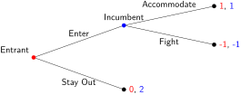
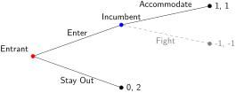
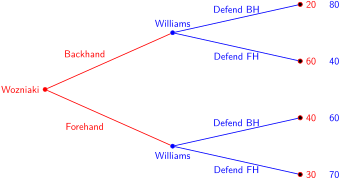

Section 2.9 Backwards Induction
Subsection 2.9.1 Solving Sequential Games
In sequential games, players can backwards induce the actions other players will choose later in the game by looking at the payoffs at terminal nodes.
The intuition is simple: the last player will want to maximize their own payoff, so we can eliminate the branch which leads to a terminal node with a lower payoff to the last player. This is called pruning.
How to Backwards Induce
To solve a game using backward induction, follow these steps:
-
Start at the end: Look at the final decision nodes (the subgames immediately preceding the terminal payoffs) at the far right or bottom of the game tree.
-
Find the optimal choice: For each of these final nodes, determine which action maximizes the payoff for the player making that specific decision. Recall that the first payoff shown is the first mover’s.
-
Prune the tree: Eliminate the branches representing actions that the final player would never rationally choose.
-
Move backward: Treat the guaranteed payoff from that optimal choice as the definitive outcome for that branch. Move one step backward up the tree to the previous player’s decision node.
-
Repeat: Evaluate the previous player’s choices based on these guaranteed downstream payoffs, pruning their suboptimal branches. Continue this process until you reach the initial starting node of the game. The remaining path dictates the optimal strategy for all players.
While sequential games technically have Nash Equilibria, the simple Nash concept is often insufficient because it can include outcomes based on non-credible threats. A non-credible threat is when a player claims they will take a certain action, but would actually be worse off if the game were to reach that point.
A strategy profile is a Subgame Perfect Nash Equilibrium or SPNE if it is not only a Nash Equilibrium for the entire game, but also a Nash Equilibrium for every single subgame within that structure.
Here’s an example of how a game may have multiple NE but only one of them is a SPNE. The market entry game illustrates this well and will allow us to see how to solve games using backwards induction. In this sequential game, an entrant decides whether to enter or stay out of a market. The entrant is the first mover. An existing firm, the incumbent, responds to the entrant. If the entrant enters, the incumbent must decide whether to accommodate the new competitor or fight them by starting a costly price war. If the entrant stays out, the incumbent doesn’t have an action as it maintains its monopoly. The game is shown below in normal and extensive form.
| Incumbent | |||
| Accommodate | Fight | ||
| Entrant | Enter | 1, 1 | -1, -1 |
| Stay Out | 0, 2 | 0, 2 | |

Let’s use backwards induction to solve the game. We start at the end, the subgame before the terminal payoff for the second player. In this case, the Incumbent only makes a choice if the Entrant chooses Enter.
The Incumbent’s best action is to Accommodate. This prunes the game tree:

The game has two PSNEs: (Enter, Accommodate) and (Stay Out, Fight). However, by applying backwards induction, we find the only SPNE is (Enter, Accommodate), since the (Stay Out, Fight) equilibrium relies on a non-credible threat.
The Incumbent implicitly threatens to start a costly price war if the Entrant enters, which successfully deters the Entrant from entering. However, if the Entrant were to enter, it would be irrational for the Incumbent to actually follow through with the threat, as accommodating yields a better payoff (1) than fighting (-1). So (Stay Out, Fight) is not a SPNE.
Can you solve this game using backwards induction?

Subsection 2.9.2 First and Second Mover Advantages
In sequential games, the order in which players move can affect the outcome of the game. A first mover advantage exists when a player is better off moving first because they can commit to an action that shapes the choices available to the other player, potentially forcing a favorable outcome.
In contrast, a second mover advantage exists when a player benefits from observing the first player’s action before making their own decision. By responding to the first mover’s choice, the second player can adapt their strategy and often achieve a better outcome. Whether moving first or second is advantageous depends on the rules of the game and how players’ decisions influence one another.
Here’s a game of second mover advantage:

In this game, Williams has the advantage over Wozniaki because she can observe Wozniaki’s shot and choose the best defense action.
Subsection 2.9.3 The Backwards Induction Paradox
Recall this game:
The game solution is PSNE={\((\text{Defect}, \text{Defect}), (\text{Defect}, \text{Defect})\)}. Backwards induction tells us that Rowan, the first player, will always choose to defect (a SPNE), yielding a payoff of 3 to each player (total 6). If both players cooperated until the end of this repeated game, then the payoff to each player would be higher, at 5 (total 10). The outcome of this game highlights the Backwards Induction Paradox.
In 1989, Philip Pettit and Robert Sugden published an article in the Journal of Philosophy in which they posit that for repeated sequential games of known length (\(n\)):
agents who are rational and who share the belief that they are rational will defect in every round. This argument holds however large \(n\) may be. And yet, if \(n\) is a large number, it appears that I might do better to follow a strategy such as tit-for-tat, which signals to you that I am willing to cooperate provided you reciprocate. This is the backward induction paradox.
Without a credible commitment mechanism, however, the strict rationality assumption "forces" the players to defect and the game ends.
But what if the players do not know when the game ends, i.e., the game is an infinite or indefinitely repeated game, then how should the players behave? Could there be strategies that, if announced, would sustain cooperation?
Types of Repeated Play
Games can be played repeatedly for:
-
a finite number of rounds \(n\text{.}\)
-
an indefinite number of rounds, where there’s a probability \(0 \leq p \leq 1\) that the game continues at least another round.
-
an infinite number of rounds, which is just a special case of indefinite play (\(p=1\) always).
For finite games, Selten’s Theorem applies: if a game with a unique Nash Equilibrium is played a finite number of times, its unique SPNE is that NE played each and every time. Therefore, cooperation is not sustainable in finite games.
But for indefinitely played games, how do we sustain cooperation?